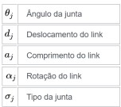

Para o presente trabalho o grupo de trabalho propôs-se analisar de forma detalhada o robot COBRA600.
O robot em causa foi desenvolvido pela empresa multinacional japonesa Omron que tem como sede Quioto.
Os parâmetros de Denavit–Hartenberg (também chamados de parâmetros DH) são quatro parâmetros associados
para fixar sistemas de referência aos elos de uma cadeia cinemática espacial, ou manipulador robótico.

Figura 1- Parâmetros DH
Para este relatório foi utilizado o MatLab, com recurso à Toolbox do Peter Corke.
Funcionalidades
De modo a compreender as funcionalidades do COBRA 600
é importante entender onde se encontram os eixos do robô. A figura 1 representa um
design feito com computador do robot em estudo e as letras (A-D)
representam os seus quatro eixos, já a tabela 1 indica que eixo cada letra representa.
Figura 2- COBRA 600 e os seus seis eixosTabela 1 - Descrição dos eixos do robot COBRA 600
A tabela 2 e 3 demonstra de forma compacta as especificações técnicas do COBRA 600.
Tabela 2 - Especificações Técnicas do COBRA 600 Tabela 3 - Área de Trabalho e Velocidadade de cada eixo do COBRA 600
O COBRA 600 é um robô industrial multifuncional de quatro graus de liberdade ou degrees of freedom (DOF),
compacto, com longo alcance (até 600mm) e
capaz de processar cargas úteis de 5.5 kg.
Pode ser montado no chão ou numa mesa.
É um robot fácil de integrar e pode ser utilizado numa variedade de aplicações.
Este robot está disponível nas versões Standard e Pro.
Como já foi referido anteriormente o COBRA 600 é um robot de quatro eixos que pode ser montado no chão ou
numa mesa como demonstra a seguinte figura:
Figura 3 - Cobra 600 montagem de forma Standard Figura 4 - Cobra 600 montagem de forma Standard
A figura 3 tem ainda uma área limitada por linhas curvas exteriores que representam a área de
trabalho do COBRA 600 para cada posição de montagem.
Este robot pode ser utilizado numa variedade de aplicações como manuseamento de materiais, montagem,
embalagem, tratamento de máquinas, aparafusamento e outras aplicações que requerem automação rápida e
precisa. Dependendo do modelo o COBRA 600 será mais apropriado para diferentes tarefas/ambientes, como é o
caso das versões COBRA 600 Standard e Cleanroom, que têm proteções que os tornam adequados para operar em
ambientes de fundição e outros ambientes hostis com altos requisitos de resistência à corrosão.
Já a versão Standard é indicada para um ambiente industrial normal, enquanto a versão Clean Room foca-se
em ambientes de sala limpa.
Um end-effector, que carrega no máximo 5.5 kg, está situado no eixo 4.
O robô está equipado com o controlador iCS-ECAT e um software de controle do robot chamado Sysmac Studio
64-bit que oferece suporte a todos os aspectos do sistema do robot, como o controlo do movimento, do
desenvolvimento e execução de programas aplicativos, comunicação, entre outros. É possível conectar um controlador
chamado Omron NJ501-R Series.
Denavit–Hartenberg
Para obter os parametros DH através do MatLab deve-se usar o comando mdl_cobra600.
Figura 5 - Output do comando mdl_cobra600
O comando mdl_cobra600 cria 1 pose, qz que representa a configuração canónica do COBRA 600 apresentada na
seguinte figura.
Figura 6 - COBRA 600 na posição qz
Foram criadas outras 2 poses, qr e qs, que definem o máximo que o robot consegue alcançar, tanto para um
lado como para o outro.
>> qr = [pi/4 pi/2 0 0]
Figura 7 - COBRA 600 na posição qr
>> qs = [-pi/4 -pi/2 0 0]
Figura 8 - COBRA 600 na posição qs
As figuras anteriores foram geradas no MatLab com o auxílio do comando c600.plot().
De seguida utilizamos o comando fkine para qualquer a cinemática direta das poses
anteriormente indicadas.
>> T1 = c600.fkine(qr)
Figura 9 - comando fkine na posição qr
>> T3 = c600.fkine(qs)
Figura 10 - comando fkine na posição qs
>> T2 = c600.fkine(qz)
Figura 11 - comando fkine na posição qz
Utilizamos o comando ikine para computar a forma fechada da cinemática inversa.
>> q1 = c600.ikine(T1, 'mask', [1 1 1 0 0 0])
Figura 12 -comando ikine
>> q2 = c600.ikine(T2, 'mask', [1 1 1 0 0 0])
Figura 13 - comando ikine
>> q3 = c600.ikine(T3, 'mask', [1 1 0 0 0 0])
Figura 14 - comando ikine
Por fim, mostramos as várias trajetórias dos movimentos do robot COBRA 600.
>> qzr = jtraj(qz,qr,75);
>> c600.plot(qzr)
Figura 15 - movimento da posição qz = [0 0 0 0] para a posição qr = [pi/4 pi/2 0 0]
>> qzs = jtraj(qz,qs,75);
>> c600.plot(qzs)
Figura 16 - movimento da posição qz = [0 0 0 0] para a posição qs = [-pi/4 -pi/2 0 0]
>> qsr = jtraj(qs,qr,75);
>> c600.plot(qsr)
Figura 17 - movimento da posição qs = [-pi/4 -pi/2 0 0] para a posição qr = [pi/4 pi/2 0 0]
Para experimentarmos vários movimentos com todos os eixos do cobra 600 usamos o seguinte comando:
>> teach(c600)
Figura 18 - comando teach(c600)
Código MatLab
>> mdl_cobra600
>> qr = [pi/4 pi/2 0 0]
>> qs = [-pi/4 -pi/2 0 0]
>> teach(c600)
>> T1 = c600.fkine(qr)
>> T2 = c600.fkine(qz)
>> T3 = c600.fkine(qs)
>> q1 = c600.ikine(T1, 'mask', [1 1 1 0 0 0])
>> q2 = c600.ikine(T2, 'mask', [1 1 1 0 0 0])
>> q3 = c600.ikine(T3, 'mask', [1 1 0 0 0 0])
>> qzr = jtraj(qz,qr,75);
>> c600.plot(qzr)
>> qzs = jtraj(qz,qs,75);
>> c600.plot(qzs)
>> qsr = jtraj(qs,qr,75);
>> c600.plot(qsr)
IRB 140
Introdução
Para o presente trabalho o grupo de trabalho propôs-se analisar de forma detalhada o robot IRB 140.
O robot em causa foi desenvolvido pela empresa multinacional ABB Robotics que tem como sede Zurique. A
ABB encontra-se hoje em mais de 100 países.
Os parâmetros de Denavit–Hartenberg (também chamados de parâmetros DH) são quatro parâmetros associados
para fixar sistemas de referência aos elos de uma cadeia cinemática espacial, ou manipulador robótico.
Figura 1- Parâmetros DH
Para este relatório foi utilizado o MatLab, com recurso à Toolbox do Peter Corke.
Funcionalidade
De modo a compreender as funcionalidades do IRB 140 é importante entender onde se encontram os eixos do
robô. A figura 1 representa um design feito com computador do robot em estudo e as letras (A-F)
representam os seus seis eixos, já a tabela 1 indica que eixo cada letra representa.
Figura 2- IRB 140 e os seus eixos Tabela 1- Descrição dos eixos IRB 140
A tabela 2 e 3 demonstra de forma compacta as especificações técnicas do IRB 140.
Tabela 2 - Especificações Técnicas do IRB 140 Tabela 3 - Área de Trabalho e Velocidadade de cada eixo do IRB 140
O IRB 140 é um robô industrial multifuncional de seis graus de liberdade ou degrees of freedom (DOF),
compacto, com longo alcance (até 810mm) e capaz de processar cargas úteis de 6 kg. É importante referir
que pode ser montado em qualquer posição/ângulo, ou seja pode ser instalado no chão, invertido ou na
parede. É um robot fácil de integrar e pode ser utilizado numa variedade de aplicações. De salientar ainda
que este robot está disponível nas versões Standard, Foundry Plus 2, Clean Room e Wash.
Como já foi referido anteriormente o IRB 140 é um robot de seis eixos que pode ser montado em qualquer
ângulo como demonstram as seguintes figuras:
Figura 2 - IRB 140 montado na parede Figura 3 -IRB 140 montado de forma Standard Figura 4 -IRB 140 montado de forma invertida
As figuras anteriores têm ainda uma área limitada por
linhas vermelhas que representa a área de trabalho
do IRB 140 para cada posição de montagem.
Foi ainda referido que este robot pode ser utilizado numa variedade de aplicações, das quais se destaca, soldagem a arco,
montagem, limpeza/pulverização, manutenção de máquinas, manuseio de materiais, embalagem e
rebarbação. Dependendo do modelo o IRB 140 será mais apropriado para diferentes tarefas/ambientes, como
é o caso das versões IRB 140 Foundry Plus e Wash, que têm proteções que os fazem adequados para operar em
ambientes de fundição e outros ambientes hostis com altos requisitos de resistência à corrosão.
Já a versão Standard é indicada para um ambiente
industrial normal, enquanto
a versão Clean Room foca-se em ambientes de sala limpa.
Um end-effector, que carrega no máximo 6 kg, incluindo carga útil, pode ser montado no eixo 6.
Outro o equipamento, com peso máximo até 1,5 kg, pode ser montado no braço superior.
As definições das áreas de carga e carga permitida são mostradas na Figura abaixo.
O centro da gravidade da carga extra deve estar dentro das áreas de carga marcadas.
Figura 5 - Áreas de carga IRB 140 Tabela 4 - Tabela das áreas de carga IRB 140
O robô está equipado com o controlador IRC5 e um software de controle do robot chamado RobotWare, que oferece suporte a todos os aspectos do sistema do robot,
como o controlo do movimento,
do desenvolvimento e execução de programas aplicativos, comunicação etc.
Denavit–Hartenberg
Para obter os parametros DH através do MatLab deve-se usar o comando mdl_irb140 .
Figura 6 - Output do comando mdl_irb140
O comando mdl_irb140 cria 3 poses, qd, qr e qz que representam as configurações canónicas do IRB 140 apresentadas nas seguintes figuras.
Figura 7 - IRB 140 na posição qd = [0 -pi/2 pi 0 0 -pi/2] Figura 8 - IRB 140 na posição qr = [0 -pi/2 pi/2 0 pi/2 -pi/2] Figura 9 - IRB 140 na posição qz = [0 0 0 0 0 0]
As figuras anteriores foram geradas no MatLab com o auxílio do comando irb140.plot() .
De seguida utilizamos o comando fkine para qualquer a cinemática direta das poses anteriormente indicadas.
Figura 10 - Cálculo da cinemática direta de qd Figura 11 - Cálculo da cinemática direta de qd Figura 12 - Cálculo da cinemática direta de qz
Por último usamos o comando ikine6s computar a forma fechada da cinemática inversa.
Figura 13 - Cálculo da cinemática inversa de qn Figura 14 - Cálculo da cinemática inversa de qr Figura 15 - Cálculo da cinemática inversa de qz
>> qzd = jtraj(qz,qd,75);
>> irb140.plot(qzd)
Figura 16 - movimento do irb 140 da posição qz = [0 0 0 0 0 0] para a posição qd = [0 -pi/2 pi 0 0 -pi/2]
>> qzr = jtraj(qz,qr,75);
>> irb140.plot(qzr)
Figura 17 - movimentodo irb 140 da posição qz = [0 0 0 0 0 0] para a posição qr = [0 -pi/2 pi/2 0 pi/2 -pi/2]
>> qdr = jtraj(qd,qr,75);
>> irb140.plot(qdr)
Figura 18 - movimento do irb 140 da posição qd = [0 -pi/2 pi 0 0 -pi/2] para a posição qr = [0 -pi/2 pi/2 0 pi/2 -pi/2]
Para experimentarmos vários movimentos com todos os eixos do irb 140 usamos o seguinte comando: